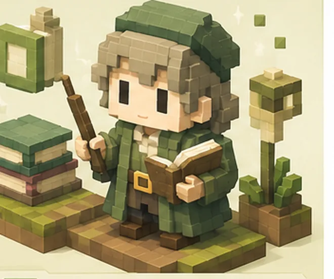

Type 02

言葉で届ける人
02
Webライター
WRITER
初収益まで 2週間〜1ヶ月
書いて納品して報酬をもらう。初期費用ゼロで一番始めやすい受注型です。
WHY / 向いている理由
—パソコンと文章力だけで完結し、初期費用が実質ゼロ
—納品すれば必ず報酬が出る、読みやすい収入
—調べて整えて書く、という手順が決まった作業と相性がいい
CAUTION / つまずきやすい点
単価が上がりにくいので、早めに得意ジャンルを決めるのが分かれ目。
FIRST STEPS / 最初の3手
1クラウドソーシングに登録して、文字単価1円前後の案件に3件応募
2自分の仕事や趣味に近いジャンルを1つ決める
3書いた記事を実績としてまとめ、直接営業に切り替える
OTHER TYPES / ほかのタイプ
 01物販・せどり
03動画編集
01物販・せどり
03動画編集
 04SNS運用代行
05ブログ・アフィリエイト
04SNS運用代行
05ブログ・アフィリエイト
 06Webサイト制作
06Webサイト制作
 07バナー・ロゴ制作
07バナー・ロゴ制作

08コンテンツ販売おすすめ副業診断テスト